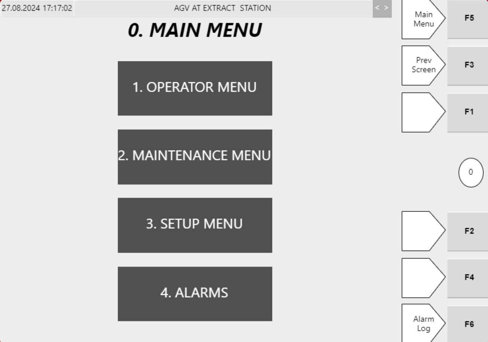

| Procedure ID | proc_navigate_hospital_hmi_main_menu_navigation_v1 |
|---|---|
| Title | Navigate Hospital HMI Main Menu to Operator, Maintenance, Setup, and Alarms |
| Procedure Type | operation |
| Primary Role | operator |
| Support Safe | Yes |
| Capability Tags | hospital_diversion |
| Access Surface | hospital_hmi |
| Audience Roles | operator |
| Failure Pattern Tags | None |
| Validation Status | needs_sme_review |
| Merge Status | source_finalized |
On the Hospital HMI Main Menu screen, use the right-hand function buttons (F1/F2/F3/F4/F5/F6) to navigate to the Operator Menu, Maintenance Menu, Setup menu, and Alarms for totes directed to the Hospital Station. Use F3 (Previous screen) to return one screen.
Use when you are on the Hospital Station Hospital HMI Main Menu screen and need to reach the Operator Menu, Maintenance Menu, Setup menu, or Alarms using the Hospital HMI function keys.

Responsible role: operator
Instruction:
Open the Hospital HMI / lane UI for the Hospital Station and display the Hospital HMI Main Menu screen.
Expected result:
The Hospital HMI Main Menu screen is displayed with the right-hand function buttons available.
Responsible role: operator
Instruction:
On the right-hand side of the Main Menu screen, press F5.
Expected result:
The screen confirms you are on the Main menu (F5 routes to the Main menu).
Stop or Escalate If:
Responsible role: operator
Instruction:
Press F1 on the right-hand side of the Main Menu screen.
Expected result:
The Operator menu screen opens (F1 routes to Operator menu).
Stop or Escalate If:
Responsible role: operator
Instruction:
Press F2 on the right-hand side of the Main Menu screen.
Expected result:
The Maintenance menu screen opens (F2 routes to Maintenance menu).
Stop or Escalate If:
Responsible role: operator
Instruction:
Press F4 on the right-hand side of the Main Menu screen.
Expected result:
The Setup menu screen opens (F4 routes to Setup menu).
Stop or Escalate If:
Responsible role: operator
Instruction:
Press F6 on the right-hand side of the Main Menu screen.
Expected result:
The Alarms screen opens (F6 routes to Alarms).
Stop or Escalate If:
Responsible role: operator
Instruction:
If you need to return, press F3 (Previous screen).
Expected result:
The HMI returns to the previous screen (F3 routes to Previous screen).
Stop or Escalate If: